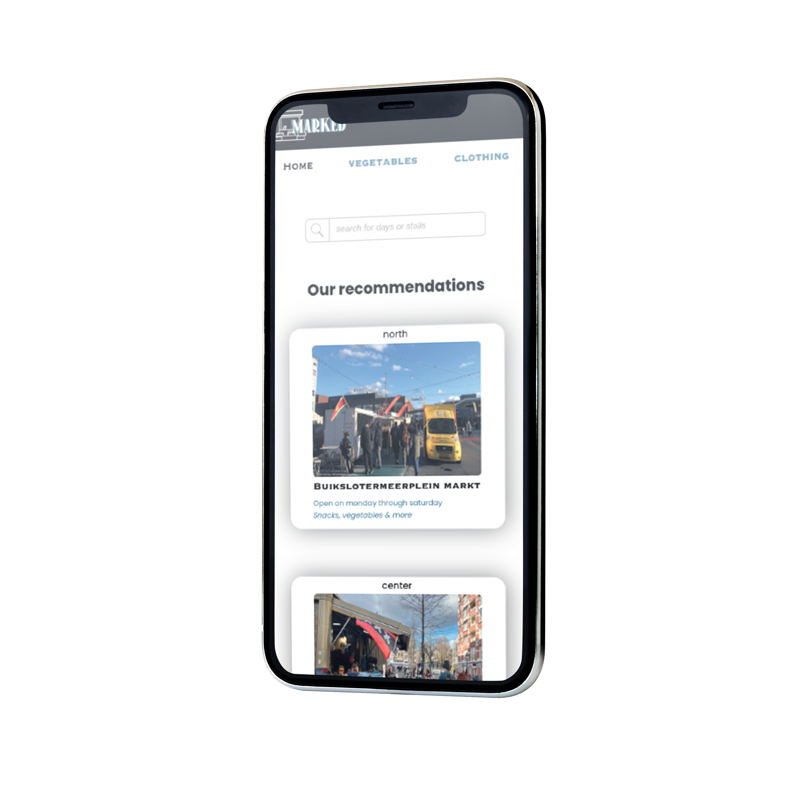
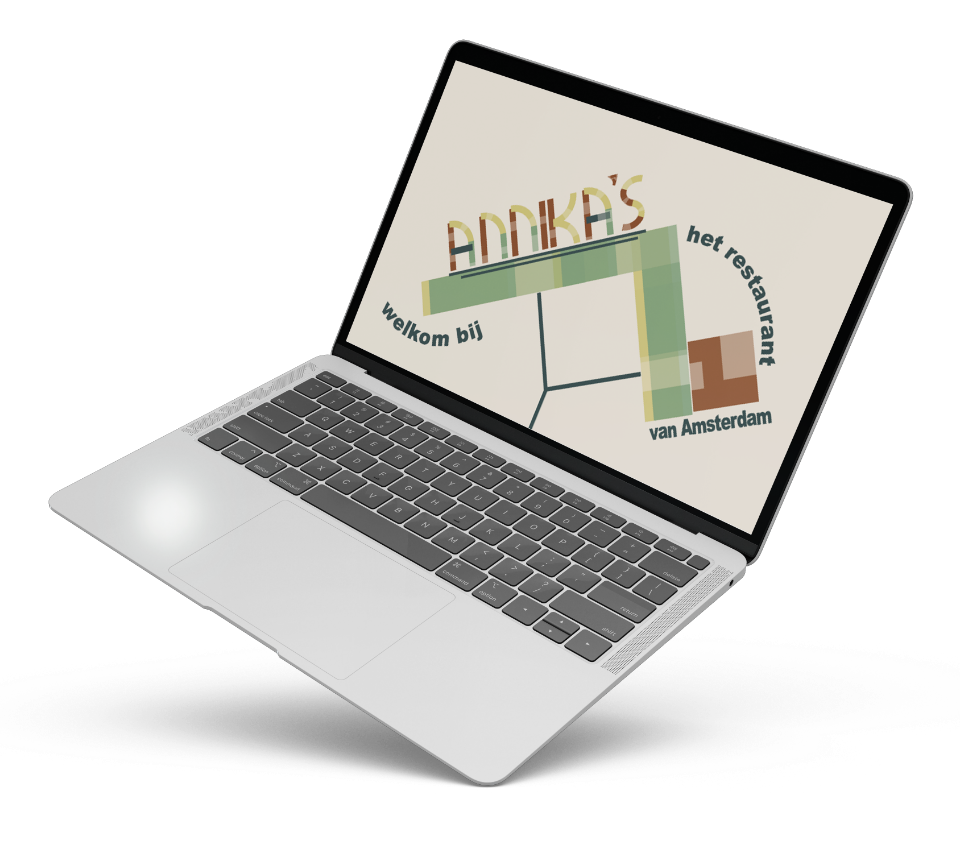

HII! I'm Annika:)
A student designer who loves the mix of Front-end development and UI design.
Marked
MARKED was my first individual project at school, where we had to help inter-national students explore Amsterdam. The persona wanted to explore the good cheap markets and so I based MARKED on that.
See More Annika's
Annika's is a restaurant inspired by the artist Hendrik Nicolaas Werkman. Hendrik was a book printer and later became an expressionist artist, printing all kinds of shapes until it became 'art'.
See More Absolut Vodka
In my second year I had a project where I had to recreate and improve a website. This project was mainly about accessibility for screen readers. You also had to add animations that help with accessibility.
See More
MekkActive
A personal project for a self-employed person. He asked for a logo with M&A in it, so first I gave him a few ideas and finally he gave me directions on how he wanted it and this is what came out..
See More